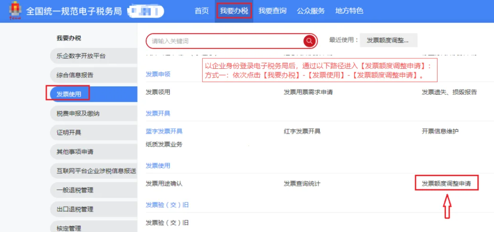
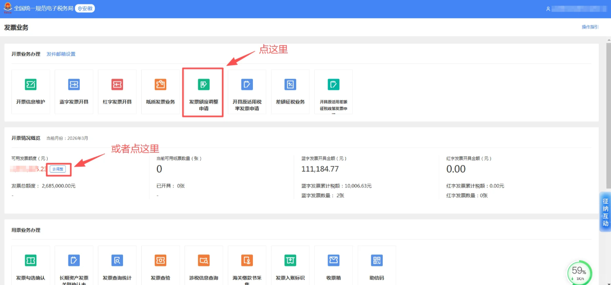
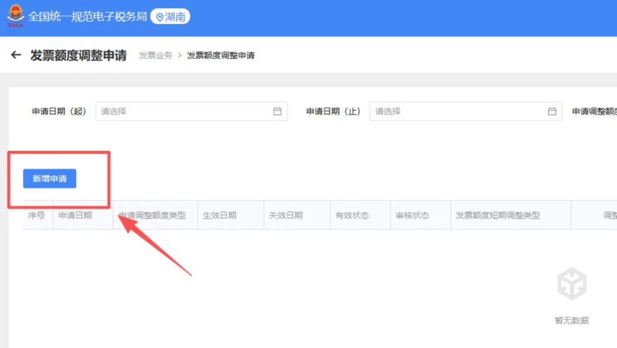
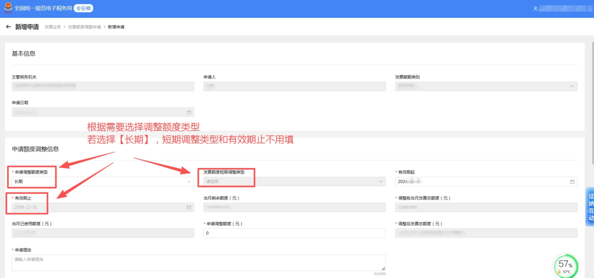
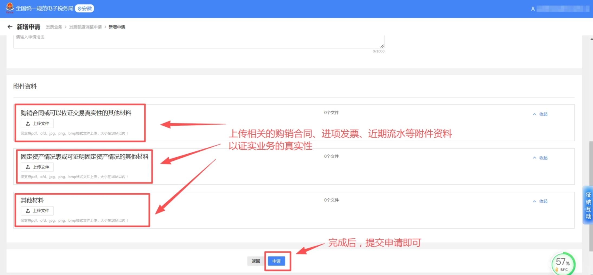
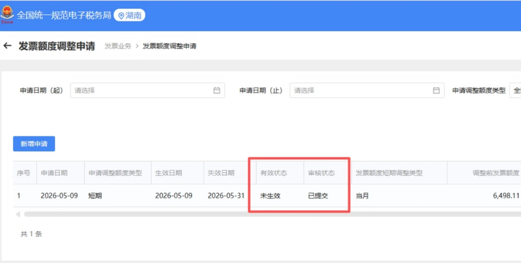

✕
点击空白处或按 ESC 关闭
| 常见情形 | 通俗理解 | 处理建议 |
|---|---|---|
| 本月可用额度不足 | 本月实际需要开票金额超过当前可用额度 | 可申请临时或按期提高额度 |
| 近期业务量明显增加 | 新增大额订单、集中结算、客户要求集中开票 | 准备合同、订单、收款或交易证明等材料 |
| 完成申报后额度仍不足 | 完成上月增值税申报后，系统更新后的额度仍不够使用 | 根据实际经营需要申请调整 |
| 系统提示超过授信额度 | 开具发票时系统提示额度不足或超过当前可用额度 | 先核对已开票金额，再提交额度调整申请 |






| 填写项目 | 怎么填更清楚 | 注意事项 |
|---|---|---|
| 申请调整额度 | 根据近期真实开票需求填写 | 建议与合同金额、订单金额、预计销售额相匹配 |
| 申请有效期 | 根据临时业务或持续经营需要选择 | 临时大额业务不建议长期申请过高额度 |
| 申请理由 | 说明业务背景、客户情况、预计开票金额 | 理由应真实、具体、可核实 |
| 上传资料 | 合同、订单、销售清单、收款凭证等 | 资料应清晰完整，金额与申请额度尽量对应 |